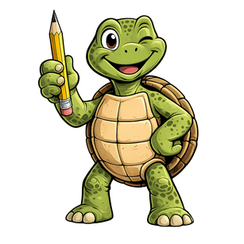

GoLogo
Le charme d'un Logo old school, la puissance d'un interpréteur moderne.
Une interface simple et directe pour dessiner, apprendre et expérimenter, avec un langage bilingue, des procédures, listes, tableaux, fichiers, grands nombres, aide intégrée et exemples prêts à lancer.
The charm of an old-school Logo, the power of a modern interpreter. A simple, direct interface for drawing, learning and experimenting: bilingual language, procedures, lists, arrays, files, big numbers, built-in help and ready-to-run examples.
Choisissez votre langue · Choose your language